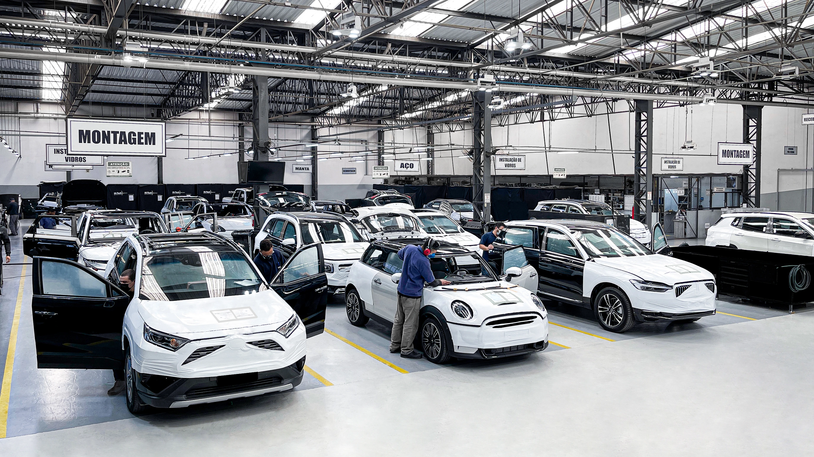

Blindagem com destino certo.
A Hi-Tech tem o sistema de gestão ambiental certificado pela ISO 14001. Isso inclui dar destino a tudo o que a fábrica gera, do vidro original às sobras de aço e de manta.
Política ambiental.
Os compromissos que orientam a gestão ambiental da fábrica, na Moóca.
- 01Proteger o meio ambiente
Em todas as atividades da empresa.
- 02Melhorar continuamente
O sistema de gestão ambiental.
- 03Atender aos requisitos legais
Aplicáveis à atividade de blindagem.
- 04Envolver a equipe
Com o compromisso dos colaboradores na proteção do meio ambiente.
Cada sobra tem destino.
A ISO 14001 exige dar destinação a todos os resíduos gerados na fábrica. Na blindagem, são três os principais.
- 01Vidro original
Retirado na troca pelo vidro blindado. Segue para reciclagem, com relatório de logística reversa.
- 02Rebarba de aço
Sobras do corte das peças de aço inoxidável usadas no overlap, nas colunas e nas fechaduras.
- 03Rebarba de manta
Sobras das mantas de aramida, moldadas para cada área do carro.
Precisa do certificado para uma licitação?
Peça à Hi-Tech a cópia atual dos certificados ISO e do escopo de cada um.